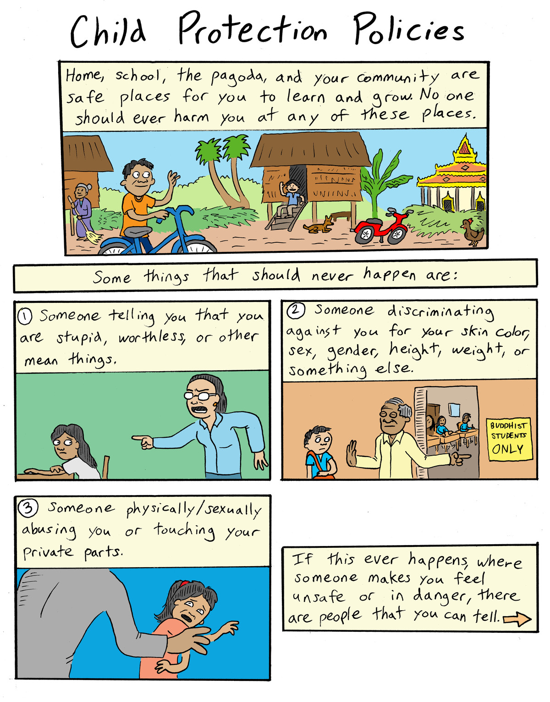
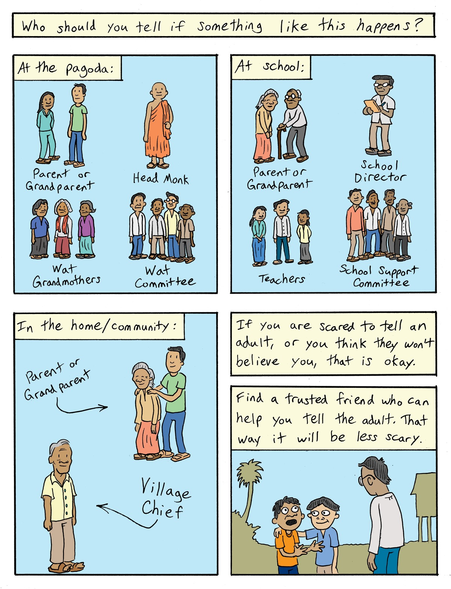
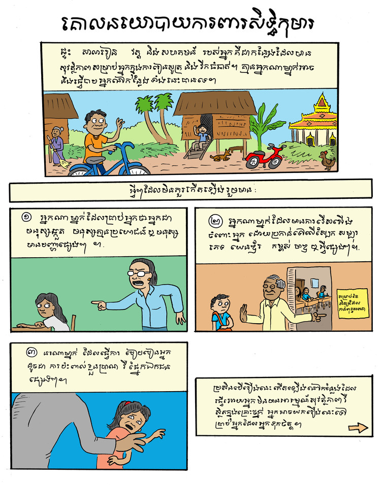
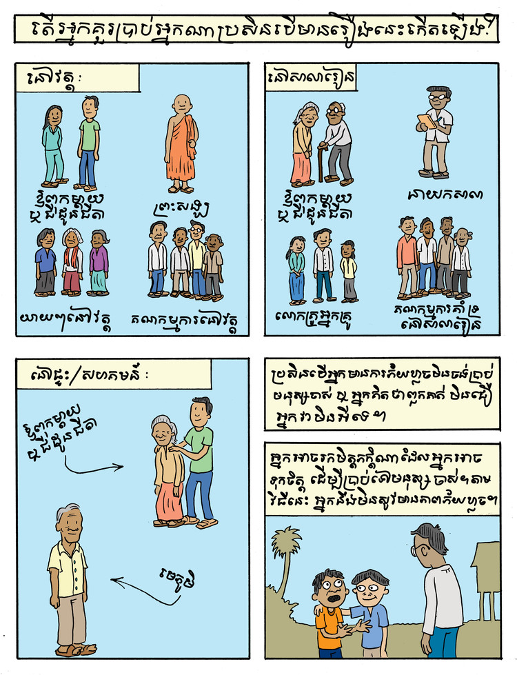

These Child Protection Policies are used by Organization to Develop Our Communities (ODOV) in the Prey Veng region of Cambodia. The purpose is to clearly communicate to schoolchildren what they can do if they feel distressed or in danger. The first version is the initial English version. The second is the Khmer version, which was passed around to schoolchildren in pamphlet form on June 1, 2018 - International Children's Day.
